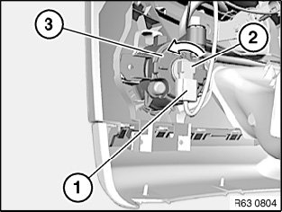

Fog/Driving Lamp Bulb: Service and Repair
63 99 230 Replacing Halogen Bulb For Left Or Right Fog Light (Mpackage/ Aerodynamics Package)

WARNING: Follow instructions for handling light bulbs (exterior lights).

Necessary preliminary work:
- Partially remove front wheel arch cover

NOTE: Front wheel arch cover shown removed for purposes of clarity.
Disconnect plug connection (1).
Turn halogen bulb for fog lamp (2) in direction of arrow and remove from fog lamp (3).
Installation note:
Note bulb type.
Make sure halogen bulb for fog lamp (2) is correctly seated and engaged in fog lamp (3).